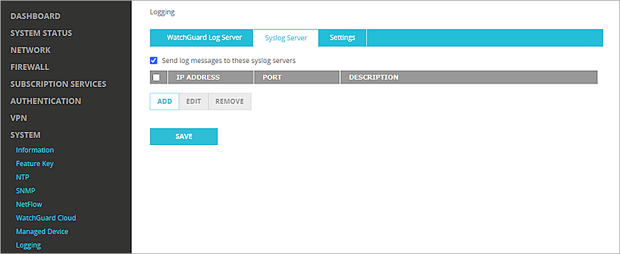
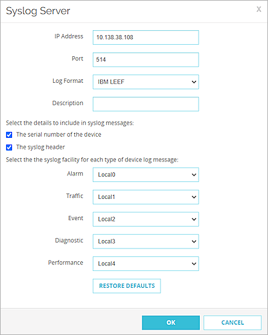
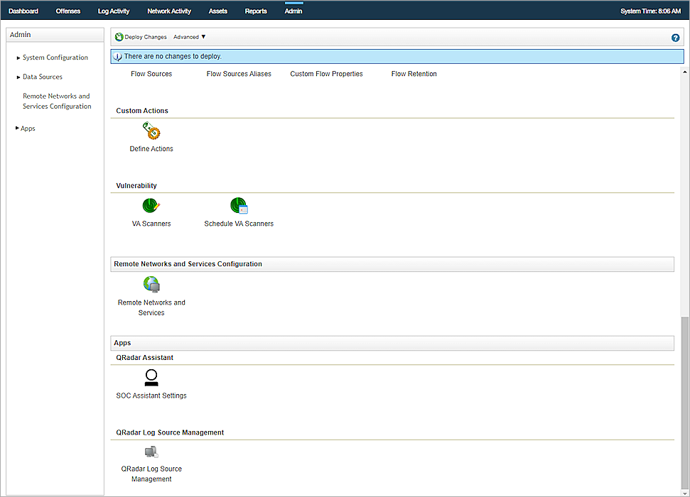
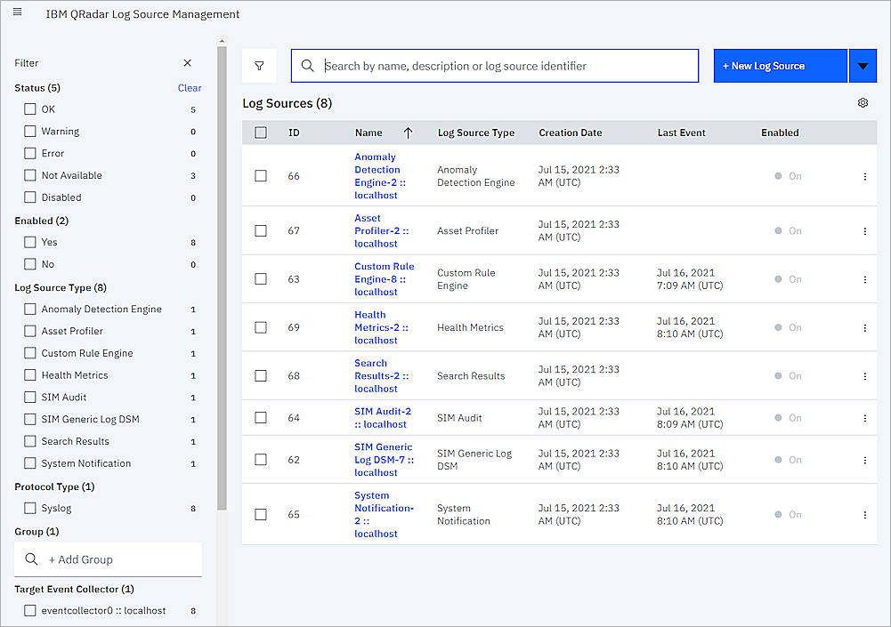
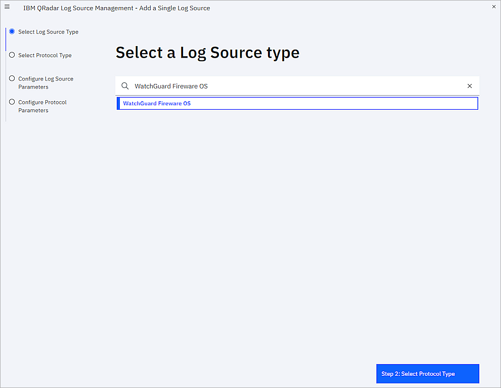
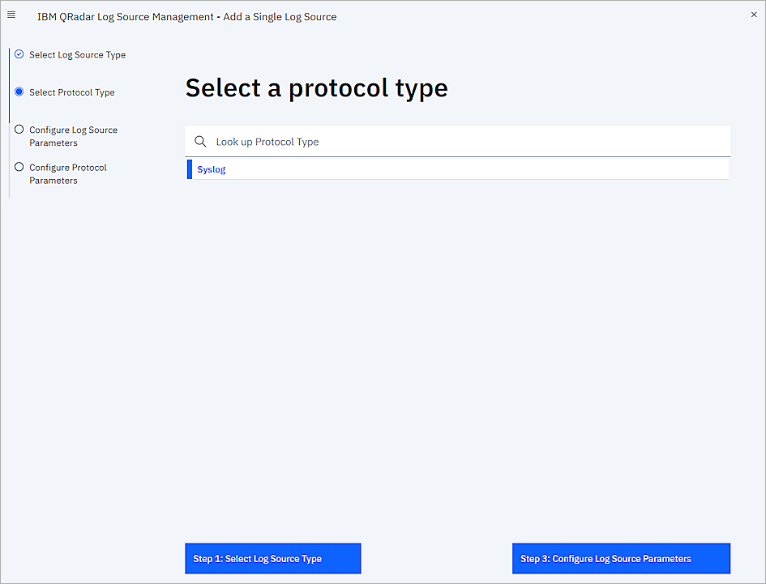
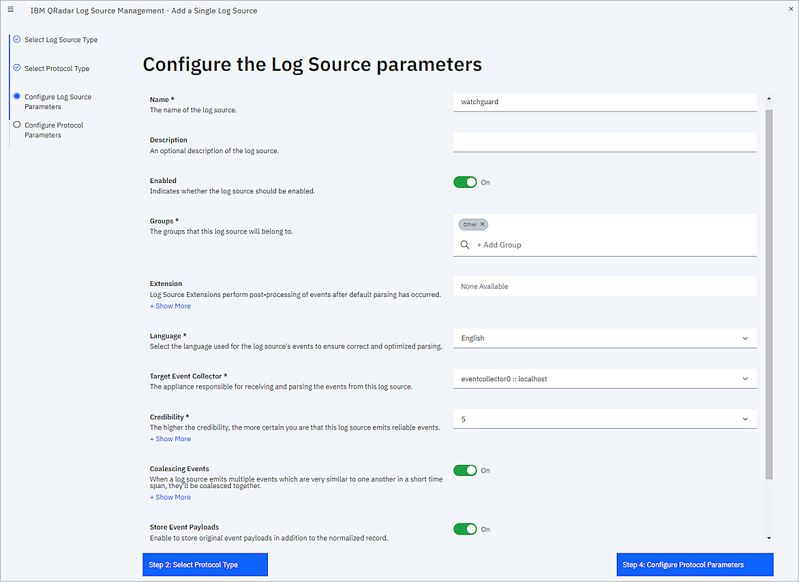
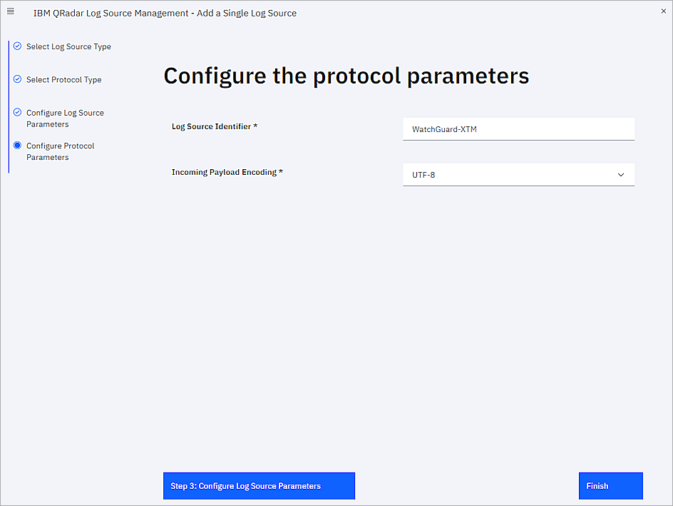
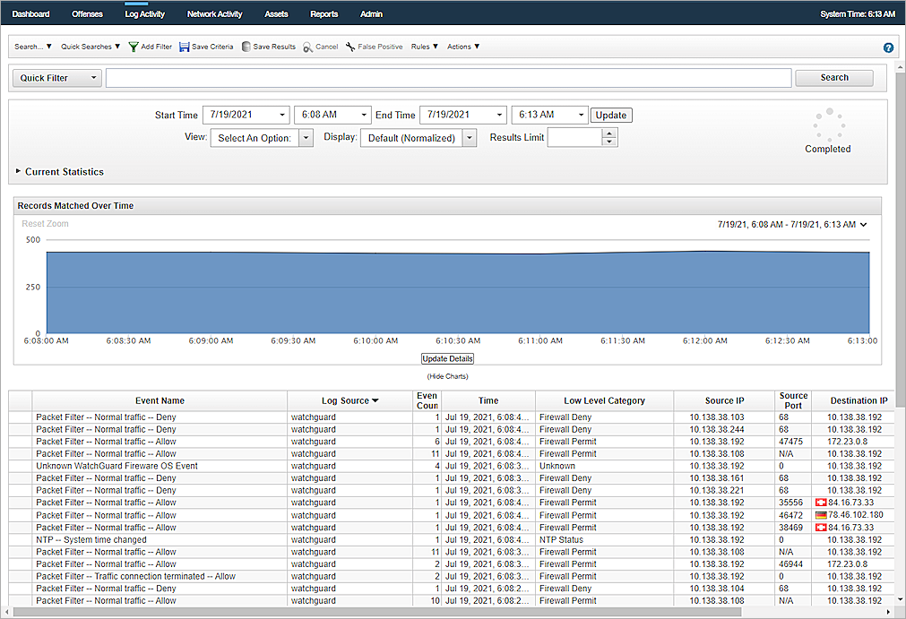
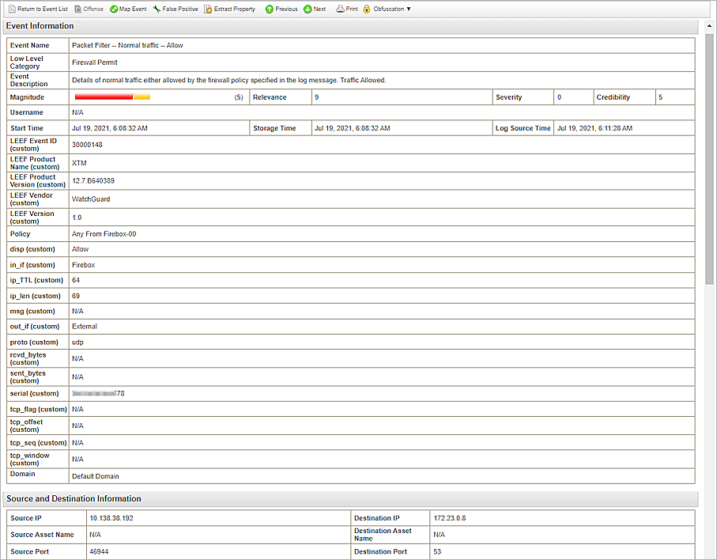

This document describes how to configure IBM Security QRadar to collect syslog events from your WatchGuard Firebox.
IBM Security QRadar uses a plugin file called a DSM (Device Support Module) to collect syslog events. For information about DSM, please refer to IBM QRadar documentation.
Test Topology
This diagram shows the test topology for this integration. You can use either a trusted or optional interface.

Platform and Software
The hardware and software used to complete the steps outlined in this document include:
- Firebox with Fireware v12.7
- IBM QRadar v7.3.3 build 20191031163225
Before You Begin
Before you begin these procedures, make sure that you:
- Install QRadar Log Source Management app
- Install the WatchGuard Fireware OS DSM
Configure the Firebox to Send Log Messages to QRadar
To collect events from Fireware OS, you must configure your Firebox to send events to QRadar. You can use Policy Manager or Fireware Web UI to make the changes. The steps in this integration guide use Fireware Web UI.
You must have Device Administrator access credentials for the Firebox.
- Log in to Fireware Web UI (https://<your Firebox IP address or domain name>:8080).
- Select System > Logging.
- Select the Syslog Server tab.
- Select the Send log messages to these syslog servers check box.

- Click Add.
The Syslog Server dialog box opens. - In the IP Address text box, enter the IP address of the QRadar Console or Event Collector.
- In the Port text box, enter 514.
- From the Log Format drop-down list, select IBM LEEF.
- To include the Firebox serial number in the log message details, select this check box: The serial number of the device.
- To include the syslog header in the log message details, select this check box: The syslog header.
- For each type of device log message, select one of the syslog facilities.
- For high priority syslog messages, such as Alarms, select Local0
- To assign priorities to other types of log messages, select an option from Local1 through Local7 (lower numbers have higher priority)
- To not send details for a log message type, select NONE

- Click OK.
The server is added to the list. - Click Save.
Configure a WatchGuard Fireware OS Log Source in QRadar
If your QRadar Console does not automatically discover the WatchGuard Fireware OS log source, use these steps to add the Firebox as a data source.
- Log in to QRadar.
- Click the Admin tab.
- In the Apps section, click QRadar Log Source Management.

- Click New Log Source.

- Select Single Log Source.
- From the Look up Log Source Type drop-down list, select WatchGuard Fireware OS.

- Click Step 2: Select Protocol Type.
- From the Look up Protocol Type drop-down list, select Syslog.

- Click Step 3: Configure Log Source Parameters.
- In the Name text box, enter the object name. In this example it is watchguard. Leave all other settings as their default values.

- Click Step 4: Configure Protocol Parameters.
- In the Log Source Identifier text box, enter the IP address or the host name of the Firebox.
If you select The syslog header check box, you must enter the Firebox host name for Log Source Identifier. If you do not select The syslog header check box, you must enter the Firebox IP address for Log Source Identifier.
- From the Incoming Payload Encoding drop-down list, select UTF-8.

- Click Finish.
- On the Admin tab, click Deploy Changes.
Test the Integration
- Log in to QRadar.
- Click Log Activity.
- In the Viewing real time events section, from the View drop-down list, select an option. In the example it is Last 5 Minutes.
- Click Log Source to sort and find the name of the log source you added. In this example it is watchguard.

- To see detailed information about an event, double-click the log message.
